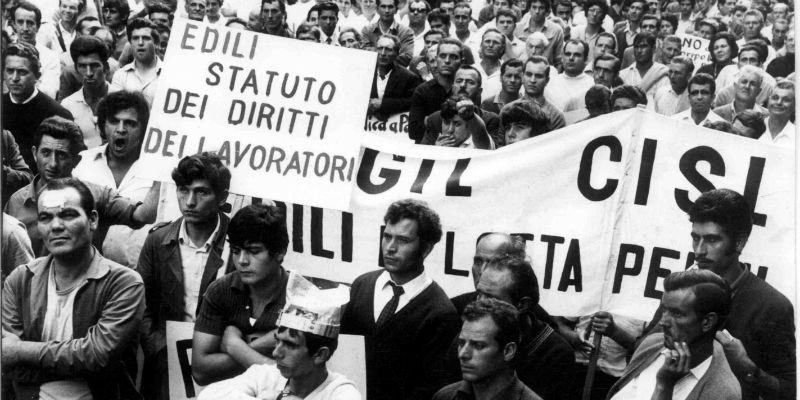
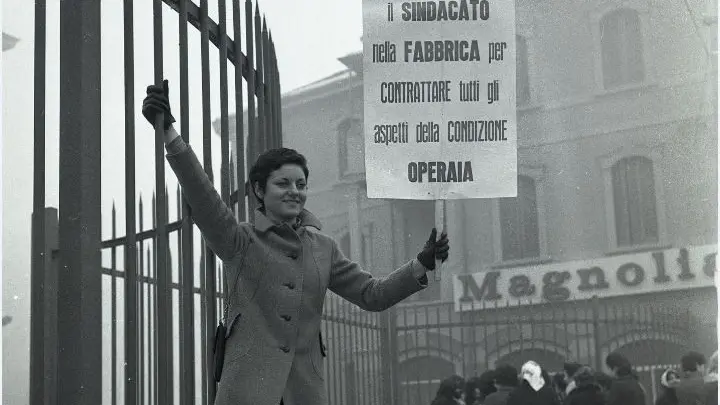

Con l'affermazione dello Stato sociale, si è superata l'idea che il mercato da solo potesse garantire giustizia ed equità. La Costituzione italiana, nata proprio per tutelare i soggetti più deboli, riconosce ai lavoratori diritti fondamentali, da difendere collettivamente attraverso sindacati e diritto di sciopero.
I sindacati sono libere associazioni di lavoratori, indipendenti dallo Stato, che negoziano migliori condizioni di lavoro attraverso i contratti collettivi. L'articolo 39 della Costituzione garantisce la libertà sindacale e permette ai sindacati registrati, con ordinamento interno democratico, di stipulare contratti validi per tutti i lavoratori della categoria. Anche chi non è iscritto al sindacato beneficia di queste tutele grazie al principio di efficacia “erga omnes”. I contratti collettivi fissano salari, diritti e doveri, assicurando condizioni minime eque per tutti.
L'articolo 40 riconosce ai lavoratori il diritto di sciopero come strumento di difesa dei propri interessi. Lo sciopero oggi può avere natura economica o politica e deve svolgersi rispettando le regole che garantiscono anche i servizi pubblici essenziali, come sanità, trasporti ed energia. Durante queste mobilitazioni devono essere garantiti livelli minimi di servizio per tutelare la collettività.
Durante il regime fascista i sindacati liberi furono aboliti, gli scioperi vietati e il lavoro subordinato all'interesse dello Stato, peggiorando drasticamente le condizioni dei lavoratori. Con la Repubblica e la nuova Costituzione, invece, sindacati e scioperi sono tornati strumenti centrali di tutela. Ancora oggi il diritto di sciopero è molto attivo: nel 2024 si contano in Italia oltre 50 scioperi al mese, segno della vitalità del mondo del lavoro.
La Festa dei Lavoratori, celebrata ogni 1° maggio, ricorda le battaglie storiche per la dignità del lavoro, il diritto all'organizzazione sindacale, alla contrattazione collettiva e allo sciopero. È un momento simbolico per riaffermare il valore della solidarietà tra lavoratori.